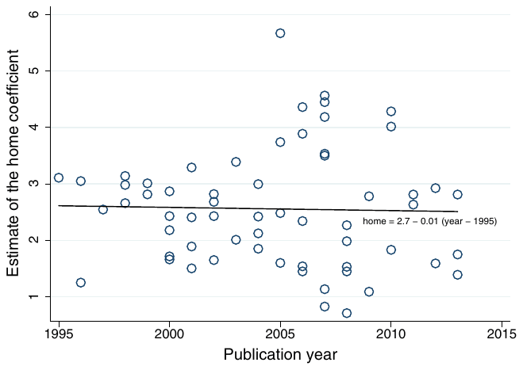
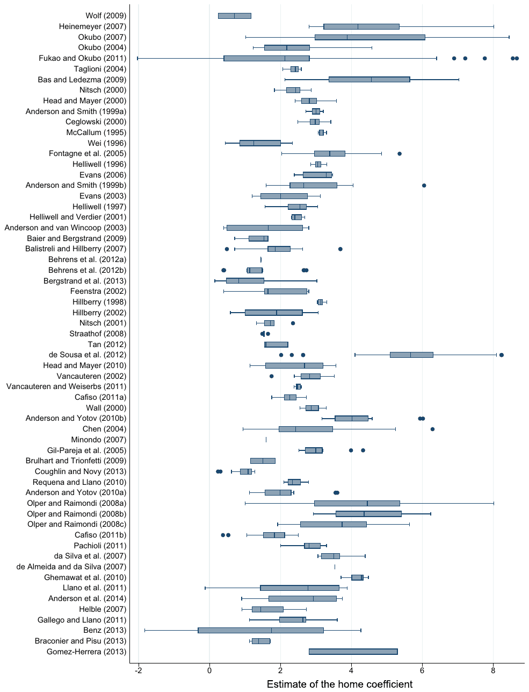
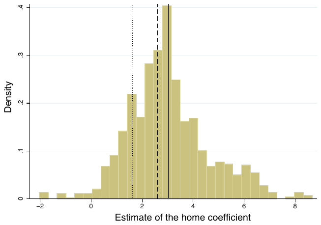
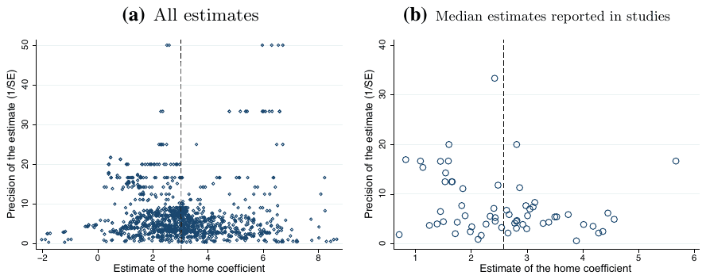
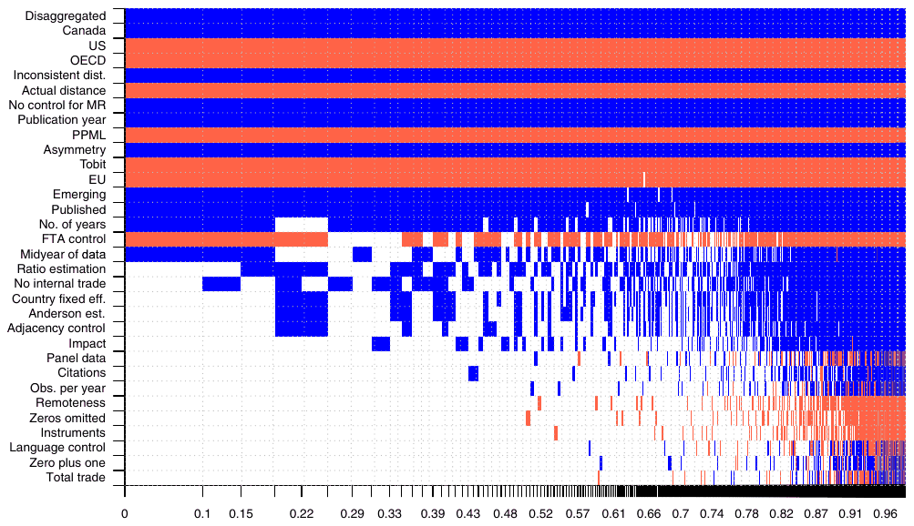

Do Borders Really Slash Trade? A Meta-Analysis
Tomas Havranek and Zuzana Irsova (2017), "Do Borders Really Slash Trade? A Meta-Analysis." IMF Economic Review 65(2), 365-396. https://doi.org/10.1057/s41308-016-0001-5.
TOMAS HAVRANEK and ZUZANA IRSOVA*
* Tomas Havranek is Senior Economist and Advisor to the Board at the Research Department of the Czech National Bank and Associate Professor at Charles University, Prague; his email address is: tomas.havranek@cnb.cz. Zuzana Irsova is Post-Doc Researcher at Charles University, Prague; her email address is: zuzana.irsova@ies-prague.org. We thank Jan Babecky, Oxana Babecka-Kucharcukova, Anne-Celia Disdier, Jarko Fidrmuc, Keith Head, Jiri Schwarz, Tom Stanley, Borek Vasicek, Diana Zigraiova, and two anonymous referees for their helpful comments. Havranek acknowledges the support from the Czech Science Foundation (Grant #15-02411S); Irsova acknowledges the support from the Czech Science Foundation (Grant #16-00027S). The views expressed here are ours and not necessarily those of the Czech National Bank.
An online appendix with data and code is available at http://meta-analysis.cz/border.
Abstract
National borders reduce trade, but most estimates of the border effect seem puzzlingly large. We show that major methodological innovations of the last decade combine to shrink the border effect to a one-third reduction in international trade flows worldwide. For the computation we collect 1,271 estimates of the border effect reported in 61 studies, codify 32 aspects of study design that may influence the estimates, and use Bayesian model averaging to take into account model uncertainty in meta-analysis. Our results suggest that methods systematically affect the estimated border effects. Especially important is the level of aggregation, measurement of internal and external distance, control for multilateral resistance, and treatment of zero trade flows. We also find that the magnitude of the border effect is associated with country characteristics, such as size and income. [JEL F14, F15]
Introduction
The finding that international borders significantly reduce trade, first reported by McCallum (1995), has become a stylized fact of international economics. A high ratio of trade within national borders to trade across borders, after controlling for other trade determinants, implies large unobserved border barriers, an implausibly high elasticity of substitution between domestic and foreign goods, or both. Obstfeld and Rogoff (2001) include the border effect among the six major puzzles in international macroeconomics, and dozens of researchers have attempted to shrink McCallum's original estimates.
Researchers have proposed several methodological solutions to the border puzzle, such as the inclusion of multilateral resistance terms, consistent measurement of within- and between-country distance, and use of disaggregated data. But the border effects reported in the literature are, on average, still close to those estimated by McCallum (1995): regions are likely to trade with foreign regions about fifteen times less than with regions in the same country (as documented in Figure 1). Apparently, individual explanations of the puzzle have been unsuccessful.
We show that innovations recently introduced to the gravity equation explain away a large portion of the border effect when their impacts are combined. Methodology matters: the use of disaggregated data, consistent measurement of within- and between-country distance, data on actual road or sea distance instead of the great-circle distance, control for multilateral resistance, and the use of the Poisson pseudo-maximum likelihood estimator all bring systematically different

estimates of the border effect compared to the standard of the gravity equation prior to the 2000s. Distinguishing between partial and general equilibrium effects of borders is also important. Using previously reported results, we construct a large synthetic study that employs best practice methodology and find that, when properly measured, borders reduce international trade worldwide by only one third compared to a counterfactual world without borders.
The border effects differ significantly across regions—we obtain large estimates for emerging countries, but relatively small estimates for most OECD countries. Our results suggest that border effects tend to be larger for smaller economies, which is in line with Anderson and van Wincoop (2003). Tariff and nontariff barriers to trade for individual countries are also positively correlated with the reported border effects. Moreover, our results are consistent with a significant home bias in preferences contributing to the border puzzle. In contrast, we fail to find a strong link between border effects for individual countries and country-specific variables related to information barriers, insecurity, and contracting costs.
We employ the framework of meta-analysis, the quantitative method of research synthesis (Stanley, 2001). Meta-analysis has been used in economics by, for instance, Card and Krueger (1995) on the employment effects of minimum wage increases, Disdier and Head (2008) on the impact of distance on trade, Havranek and Irsova (2011) on the relation between foreign investment and local firms' productivity, and by Chetty, Guren, Manoli, and Weber (2011) on the intertemporal elasticity of substitution in labor supply. We collect 32 aspects of studies, such as the characteristics of data, estimation, inclusion of control variables, number of citations, and information on the publication outlet, and also examine 9 country characteristics. To explore how these characteristics affect the estimates of the border effect, we employ Bayesian model averaging (Raftery, Madigan, and Hoeting, 1997). The method addresses the model uncertainty inherent in meta-analysis by estimating regressions comprising the potential subsets of the study aspects and weighting them by statistics related to the goodness of fit.
The only other quantitative survey on this topic is presented by Head and Mayer (2014, pp. 160–165), who compute the mean and median reported estimates of several important coefficients in the gravity equation, including the border effect, but do not explore why the estimates vary. They collect 279 estimates from 21 studies, in contrast to 1,271 estimates from 61 studies included in our meta-analysis. Head and Mayer (2014) also include estimates of intranational home bias (for example, Wolf, 2000), which we prefer to exclude and focus on the effect of international borders. In consequence, only 10 studies overlap in the datasets of the two meta-analyses.
The remainder of the paper is organized as follows. Section 2 describes how we collect data from studies and discusses the basic properties of the dataset. Section 3 tests for publication selection bias in the literature. Section 4 explores method heterogeneity in the estimated border effects and constructs best practice estimates for different regions. Section 5 relates the border coefficients estimated for different regions to country-level characteristics. Section 6 concludes the paper. The online appendix at http://meta-analysis.cz/border provides the data, code, additional statistics, and list of studies included in the meta-analysis.
The Border Effects Dataset
The studies from which we collect estimates of the border effect assume that trade flows are generated by the following general definition of the gravity equation:
where Tradeij denotes the volume of trade flows from region i to region j, G is a "gravitational" constant, Exporteri denotes the exporting capabilities of region i with respect to all trading partners, Importerj denotes the characteristics of region j that affect imports from all trading partners (studies prior to Anderson and van Wincoop, 2003, typically use GDP for the Exporter and Importer variables), Distanceij denotes the distance between regions i and j, Samecountryij denotes a dummy variable that equals one if regions i and j belong to the same country, and Accessij denotes all other bilateral accessibility characteristics between regions i and j (for example, a free trade agreement).
The authors usually estimate a log-linearized version of (1) with exporter and importer fixed effects to control for multilateral resistance terms. Some authors use nonlinear estimators, and even for the linear estimation there are many method choices the authors must make. We identify 32 aspects of study design that may potentially influence the estimate of the border effect and explain them in detail in Section 4. We collect estimates of home reported in studies, which is the semi-elasticity corresponding to the ratio of within to between-country trade flows; the border effect can be obtained by exponentiating the semi-elasticity. It is convenient to analyze the semi-elasticities because authors provide standard errors for them and the estimates should be approximately normally distributed.
It is important to stress that the estimates of home from (1) do not measure the counterfactual effect of removing borders, but merely a partial equilibrium effect disregarding any changes in multilateral resistance terms and output. Head and Mayer (2014, pp. 165–170) discuss in great detail the differences between partial and general equilibrium effects of various trade costs, and the influential paper by Anderson and van Wincoop (2003) was the first one to focus on this distinction in the context of border effects. The estimated coefficient home ignores any third-country effects, which are, however, likely because any change in trade costs between two countries changes multilateral resistance with respect to other countries. Additionally, changes in trade costs induce changes in wages and output, which also have to be properly accounted for in any counterfactual exercise. We would prefer to collect and analyze estimates of the general equilibrium effects of borders if there were enough of them in the literature. Since only a couple of studies report general equilibrium effects, we collect estimates of home, derive the estimate conditional on best practice methodology, and then in Section 4 use the exact hat algebra by Dekle, Eaton, and Kortum (2007) to approximate the counterfactual experiment of removing borders.
Our data sources are studies that estimate the semi-elasticities; we call them primary studies and search for them using the RePEc database. We use the following search query for titles, keywords, and abstracts of papers listed in the database: (border OR home bias) AND trade AND gravity. The search yields 370 hits since 1995. We read the abstracts of all the studies and download those that show promise of containing empirical estimates of the border effect. (Some of the 370 studies are theoretical in nature, which is apparent from the abstract, and we do not download those.) Additionally, we examine the references of the studies and obtain other papers that might provide empirical estimates. We stop the search on January 1, 2014. The list of all studies examined is available in the online appendix at http://meta-analysis.cz/border.
We apply three inclusion criteria. First, the study must investigate the effect of international borders. That is, we exclude studies estimating intranational border effects (for example, Wolf, 2000). We expect the mechanism driving border effects in intranational trade to be different enough to call for a separate meta-analysis. Second, we exclude papers that include the "same nation" dummy in the gravity equation as a control variable for territories, such as the overseas departments of France (for example, Rose, 2000). The "same nation" dummy has little variation and often captures trade between a large country and its small territories. (We exclude 7 such studies, mostly taken from the list of studies included in the survey by Head and Mayer, 2014). Third, we only include studies that provide standard errors for their estimates—or statistics from which standard errors can be computed. Without estimates of standard errors, we cannot test for publication bias in the literature. While we conduct the search using English keywords, we do not further exclude any studies based on the language of publication: two studies written in Portuguese are included.
The 61 studies that conform to our selection criteria are listed in the online appendix. Of these, 48 are published in refereed journals and 13 are working papers or mimeographs; later in the analysis we control for the publication outlet of the study and other aspects of quality. The median study in our sample was published in 2007, which shows that the literature estimating border effects is alive and well, with more and more studies coming out each year. Together, the studies have received almost 11,000 citations in Google Scholar, or about 800 on average per year, which suggests the importance of border effects for international economics.
We collect all estimates of the semi-elasticity from the primary studies. The approach yields an unbalanced dataset, since some studies report many more estimates than other studies, but has three big advantages. First, it is demanding and sometimes impossible to select the authors' preferred estimate to represent each study, so by collecting all estimates we avoid the most subjective stage of meta-analysis. Second, throwing away information is inefficient, and many studies report estimates employing alternative methods or datasets, which increases the variation in our dataset. Third, using multiple estimates per study we can employ study-level fixed effects, which removes all characteristics idiosyncratic to individual studies. In total, we gather 1,271 estimates of the semi-elasticity; the median primary study reports 13 estimates.
A few problems concerning data collection are worth mentioning. To start with, the variable capturing the border effect is not always defined in the same way as Same country in (1). Often it equals one for cross-border trade flows, in which case we simply take the negative of the estimated coefficient. Sometimes, however, the dummy variable equals one only for trade flows crossing the border in one direction (for example, Anderson and Smith, 1999). Following the common practice to "better err on the side of inclusion" in meta-analysis (Stanley, 2001, p. 135), we choose to include the estimates of directional border effects, but control for this aspect of methodology to see whether it yields systematically different estimates. We also include the few border effect estimates that use services trade data (Anderson, Milot, and Yotov, 2014), although almost all studies focus on the arguably less home-biased goods trade. Finally, the collection of data is labor intensive, since we gather information on 32 aspects of estimation design (summarized in Table 3 in Section 4) for all 1,271 estimates. To alleviate the danger of typos and mistakes, both of us collect the data independently and correct inconsistencies by comparing the two datasets. The final dataset is available in the online appendix at http://meta-analysis.cz/border.
Figure 2 shows a box plot of the estimates reported in the primary studies; the heterogeneity both between and within studies is substantial. It is apparent, however, that most studies report at least some estimates close to 3, near the original estimate by McCallum (1995). A large portion of the heterogeneity in the estimates may be due to differences in data, and especially different countries for which the border effect is evaluated. Table 1 shows the mean estimates for the countries and country groups that are examined most commonly in the literature.

We say that an estimate corresponds to the border effect of a particular country if identification of the semi-elasticity comes from trade flows within the country. For example, if data on trade flows between Canadian provinces are used, such as in McCallum (1995), we consider the estimated border effect Canadian, although the estimation also includes data on the US (flows between Canadian provinces and the US states). Some authors used both province-to-province trade flows and state-to-state flows (for example, Anderson and van Wincoop, 2003); the resulting estimates of the border effect correspond to both Canada and the US and are not shown in the table. The estimates for all other countries and groups of countries are nevertheless included in the overall mean reported in the last row of the table. (Relatively common are also estimates that identify the border effect for the entire world or that use internal trade for Japan, Germany, and Spain.)
Table 1 also shows the corresponding confidence intervals constructed using clustered standard errors. Many meta-analyses cluster standard errors at the study level, because estimates reported in the same primary study are likely to be dependent. Nevertheless, we are not aware of any meta-analysis that also tries to take into account the dependence in estimates due to the use of similar datasets. A few studies in our sample use the same dataset, especially the one introduced by Anderson and van Wincoop (2003), but many others simply add a few years to data used elsewhere. So, we consider datasets to be the same or very similar if they provide data on the same region and start in the same year, and additionally cluster standard errors at the level of similar datasets. The implementation of two-level clustering follows the approach of Cameron, Gelbach, and Miller (2011).
| No. of estimates | Unweighted | Weighted | |||||
|---|---|---|---|---|---|---|---|
| Mean | 95 percent conf. int. | Mean | 95 percent conf. int. | ||||
| Canada | 213 | 2.86 | 2.66 | 3.06 | 2.81 | 2.58 | 3.05 |
| US | 64 | 0.72 | 0.03 | 1.40 | 1.36 | 0.99 | 1.73 |
| EU | 263 | 2.55 | 2.04 | 3.05 | 2.59 | 2.18 | 2.99 |
| OECD | 98 | 2.35 | 1.71 | 3.00 | 2.41 | 1.90 | 2.91 |
| Emerging | 82 | 5.05 | 4.59 | 5.51 | 4.14 | 3.18 | 5.10 |
| All countries | 1,271 | 3.03 | 2.54 | 3.53 | 2.59 | 2.23 | 2.95 |
Notes: The table presents mean estimates of the home coefficient (the coefficient estimated in a gravity equation on the dummy variable that equals one for within-country trade flows; the partial equilibrium effect of borders) for selected countries and country groups. The confidence intervals around the mean are constructed using standard errors clustered at both the study and dataset levels (the implementation of two-way clustering follows Cameron, Gelbach, and Miller, 2011). In the right-hand part of the table, the estimates are weighted by the inverse of the number of estimates reported per study.
The left-hand part of the table shows unweighted estimates; the right-hand part shows estimates weighted by the inverse of the number of observations reported in each study. Using these weights, we assign each study the same importance; otherwise, studies reporting many semi-elasticities drive the results. The mean unweighted estimate of the semi-elasticity equals 3, virtually identical to the original estimate of the parameter by McCallum (1995). This semi-elasticity implies a border effect of , which means that an average region in an average country trades twenty times more with regions in the same country than with foreign regions of similar characteristics. The 95 percent confidence interval for the mean estimate of the border effect is (13, 34), which shows substantial uncertainty due to differences in methodology.
The table documents that the semi-elasticities estimated for individual countries vary substantially. The smallest mean estimate corresponds to the US (implying a border effect of 2 in the case of the unweighted estimates), while the largest mean is obtained for emerging countries (implying a border effect of 156). The respective means for Canada, the EU, and OECD countries are close to the overall mean. When we weight the estimates by the inverse of the number of observations reported in each study, we obtain a smaller overall mean, implying a border effect of 13.3, and the country-specific estimates get less dispersed. In both cases, the lower bound of the 95 percent confidence interval of the estimate for emerging countries is larger than the upper bounds of the confidence intervals for all other groups of countries. That is, the border effects estimated in the literature suggest that developing and transition countries are substantially less integrated into global trade than developed countries.
| No. of estimates | Unweighted | Weighted | |||||
|---|---|---|---|---|---|---|---|
| Mean | 95 percent conf. int. | Mean | 95 percent conf. int. | ||||
| Panel data | 847 | 3.47 | 2.93 | 4.01 | 2.93 | 2.56 | 3.30 |
| Disaggregated | 724 | 3.50 | 2.90 | 4.10 | 2.88 | 2.42 | 3.33 |
| Internal trade | 538 | 2.44 | 1.90 | 2.98 | 2.35 | 1.89 | 2.81 |
| Consistent dist. | 1,094 | 3.10 | 2.54 | 3.65 | 2.56 | 2.13 | 2.99 |
| Control for MR | 784 | 3.29 | 2.64 | 3.94 | 2.58 | 2.05 | 3.11 |
| Zeros included | 436 | 2.49 | 1.93 | 3.06 | 2.41 | 2.04 | 2.79 |
| Published | 1,144 | 3.11 | 2.59 | 3.64 | 2.66 | 2.28 | 3.04 |
| New studies | 607 | 3.06 | 2.24 | 3.89 | 2.58 | 1.98 | 3.18 |
| All estimates | 1,271 | 3.03 | 2.54 | 3.53 | 2.59 | 2.23 | 2.95 |
Notes: The table presents mean estimates of the home coefficient (the coefficient estimated in a gravity equation on the dummy variable that equals one for within-country trade flows; the partial equilibrium effect of borders) for estimates obtained using a particular methodology or reported in a particular study. Internal trade = within-country trade flows are directly observed in the data. Consistent dist. = within-country distance is measured in the same way as between-country distance. MR = multilateral resistance. New studies = studies published in 2007 (the median year of publication in our data) or later. The confidence intervals around the mean are constructed using standard errors clustered at both the study and dataset levels (the implementation of two-way clustering follows Cameron, Gelbach, and Miller, 2011). In the right-hand part of the table, the estimates are weighted by the inverse of the number of estimates reported per study.
In Table 2, we report the mean estimated semi-elasticities for particular subsets of methods and studies. When compared with Table 1, it seems that the effect of methods on results is less pronounced than the effect of the choice of the region for which the border effect is estimated. Some method choices bring systematically different results, but the impacts get muted when we move to the right-hand part of the table where each study is assigned the same weight. Estimates obtained using panel or disaggregated data tend to be somewhat larger, while the use of actual within-country trade flows (as opposed to approximating internal trade using production data) and inclusion of zeros are associated with smaller estimates. Published studies report mean estimates virtually identical to those of unpublished studies, and the average results also do not change much in time. Because authors often change several data and method characteristics simultaneously, and there are many additional aspects of study design that might influence the estimates; in Section 4, we use meta-regression analysis to investigate in detail the marginal effects of data and method choices on the reported border effects.
Figure 3 shows the histogram of the estimated semi-elasticities. We see that almost all the estimates are positive; in the data we only have 22 negative estimates, 1.7 percent of all the semi-elasticities. The median estimate is very close to the overall mean and equals 2.9. The median estimate of the median semi-elasticities reported in individual studies equals 2.6, which is virtually identical to the mean of the estimates weighted by the inverse of the number of estimates reported per study. The closeness of the mean and median together with the shape of the histogram suggests that there are no serious outliers in our dataset, so we do not exclude any estimates from the meta-analysis.

The journals in which the primary studies are published differ greatly in prestige and rating. On the one hand, some studies are published in top field and general interest journals; on the other hand, many estimates come from studies published in local outlets. To illustrate the potential differences in quality, we distinguish a group of studies published in top field or top or second-tier general interest journals: the American Economic Review, Journal of International Economics, International Economic Review, European Economic Review, and Journal of Applied Econometrics. Eleven studies in our sample are published in these journals and they report a median semi-elasticity of 1.7, implying a border effect of 5.5, less than a third of the overall mean effect. Studies in respected journals seem to report smaller semi-elasticities, but the pattern may be explained by differences in methodology. Another potential reason for such differences is publication selection if good journals put a premium on solving the border puzzle.
Publication Bias
Publication selection bias arises when estimates have a different probability of being reported based on their magnitude or statistical significance. Sometimes, it is called the “file drawer problem” (Rosenthal, 1979): researchers may hide in their file drawers estimates that are insignificant or have an unintuitive sign and search for estimates that are easier to publish. Publication bias has been identified in empirical economics by, for example, DeLong and Lang (1992), Card and Krueger (1995), Ashenfelter, Harmon, and Oosterbeek (1999), Havranek and Irsova (2012), and Havranek (2015). In a survey of examinations of publication bias, Doucouliagos and Stanley (2013) find that most fields of empirical economics are seriously affected by the problem. Because the potential presence of publication bias has implications for the weights that should be used in meta-analysis, we test for the bias before we proceed to the analysis of heterogeneity.
If researchers preferentially report estimates that are statistically significant and have the expected sign, the literature as a whole exaggerates the effect in question. For example, Stanley (2005) finds that the mean estimate of the price elasticity of water demand is exaggerated fourfold because of publication bias. The problem is widely recognized in medical science, and the best medical journals now require registration of clinical trials before publication, so that researchers can find the results of all trials, even though some are not submitted for publication. In a similar vein, the American Economic Association has agreed to establish a registry of randomized experiments “to counter publication bias” (Siegfried, 2012, p. 648).
The presence of publication bias can be examined visually using the so-called funnel plot (Egger, Smith, Scheider, and Minder, 1997). It is a scatter plot showing the magnitude of the estimated effects on the horizontal axis and the precision (the inverse of the estimated standard error) on the vertical axis. If the literature is not influenced by publication bias, the most precise estimates of the effect will be close to the mean underlying effect. As the precision decreases, the estimates get more dispersed, forming a symmetrical inverted funnel. In the presence of publication bias, the funnel becomes asymmetrical (if researchers discard estimates of a particular sign or magnitude), or hollow (if researchers discard statistically insignificant estimates), or both.
We report the funnel plot for the border effect literature in Figure 4. Panel (a) shows the funnel for all estimates; panel (b) shows only the median estimates for each study. We make three observations from the funnels. First, both funnels are relatively symmetrical, with the most precise estimates being close to the average reported semi-elasticity. Second, the funnels are not hollow, and even estimates with very little precision (and, thus, small p values) are reported. Third, the funnel in panel (a) has multiple peaks, which suggests heterogeneity in the estimated border effects. Signs of heterogeneity are not surprising given our estimates of cross-country differences in the previous section. We conclude that typical funnel plots reported in economics meta-analyses show much clearer signs of publication bias than what we observe in the literature on border effects (see, for example, Stanley and Doucouliagos, 2010).

The funnel plot represents a simple visual tool for the evaluation of publication bias, but the presence of bias can be tested more formally. Following Card and Krueger (1995), we explore the relationship between the estimates of the semi-elasticity and their standard errors. Because the methods used by researchers to estimate the semi-elasticity yield a t distribution (or another symmetrical distribution) for the ratio of estimates to their standard errors, the estimates and standard errors should be statistically independent quantities. In contrast, if statistically significant estimates are preferred, researchers will search for large estimates of the semi-elasticity in order to offset the standard errors and produce large t statistics, which will lead to a correlation between the semi-elasticities and standard errors. Similarly, when researchers discard negative estimates, a positive relationship arises between the reported estimates and their standard errors because of heteroskedasticity (Stanley, 2005):
where are the i-th estimates of the semi-elasticity reported in j-th study, are the reported standard errors of the semi-elasticity estimates, is the mean semi-elasticity corrected for potential publication bias, measures the extent of publication bias, and is a normal disturbance term. For example, if the true mean semi-elasticity was zero (implying no border effect) but all researchers reported the 5 percent of estimates that are positive and statistically significant, the estimated would be close to two: the researchers would need their t statistics, , to equal at least two. In the online appendix we show that various statistical tests of (2) corroborate our impression from the funnel plot and suggest no publication bias, even when the sample is restricted to published studies only. Therefore, we proceed to the examination of heterogeneity among border effect estimates.
Method Heterogeneity
Variables and Estimation
We substitute the characteristics of estimates and studies for in Eq. (2). The previous section shows that the reported standard errors are not correlated with the estimates of the semi-elasticity, and the exclusion of the standard error has the additional benefit of removing the obvious heteroskedasticity. In all estimations, we weight the regressions by the inverse of the number of estimates reported per study to give each study the same weight.
| Variable | Description | Mean | SD | WM |
|---|---|---|---|---|
| Home | The coefficient estimated in a gravity equation on the dummy variable that equals one for within-country trade flows (or minus the coefficient on the dummy variable that equals one for cross-border flows); the partial equilibrium effect of borders | 3.03 | 1.60 | 2.59 |
| SE | The estimated standard error of home | 0.30 | 0.35 | 0.26 |
| Data characteristics | ||||
| Midyear of data | The midpoint of the sample on which the gravity equation is estimated (base is the sample minimum: 1899) | 91.3 | 16.0 | 91.7 |
| Panel data | =1 if panel data are used in the gravity equation | 0.67 | 0.47 | 0.52 |
| Disaggregated | =1 if trade flows are disaggregated at the sector or product level | 0.57 | 0.50 | 0.41 |
| Obs. per year | The logarithm of the number of observations per year included in the gravity equation | 6.89 | 1.31 | 6.93 |
| No. of years | The logarithm of the number of years in the data | 1.27 | 1.04 | 0.91 |
| Countries examined | ||||
| Canada | =1 if the border effect is estimated for Canada (reference category for this group of dummy variables: the border effect is estimated for the entire world or combinations of country groups) | 0.17 | 0.37 | 0.18 |
| US | =1 if the border effect is estimated for the US | 0.05 | 0.22 | 0.08 |
| EU | =1 if the border effect is estimated for the EU | 0.21 | 0.41 | 0.23 |
| OECD | =1 if the border effect is estimated for OECD countries | 0.08 | 0.27 | 0.06 |
| Emerging | =1 if the effect is estimated for developing or transition countries | 0.06 | 0.25 | 0.05 |
| Design of the analysis | ||||
| No internal trade | =1 if within-country trade flows are not observed but estimated using production data | 0.58 | 0.49 | 0.43 |
| Inconsistent dist. | =1 if within-country distance is measured differently from between-country distance | 0.14 | 0.35 | 0.21 |
| Actual distance | =1 if actual distance traveled by road or sea is used instead of the great-circle formula | 0.06 | 0.24 | 0.07 |
| Total trade | =1 if total trade is used as the dependent variable and imports and exports are summed before taking logs | 0.01 | 0.12 | 0.01 |
| Asymmetry | =1 if the estimate measures the difficulty of cross-border flows in one direction | 0.29 | 0.45 | 0.14 |
| Instruments | =1 if instruments are used to correct for the endogeneity of GDP | 0.06 | 0.25 | 0.06 |
| Treatment of multilateral resistance | ||||
| Remoteness | =1 if remoteness terms are included (reference category for this group of dummy variables: multilateral resistance terms are controlled for by a method not listed here) | 0.06 | 0.24 | 0.10 |
| Country fixed eff. | =1 if destination and origin fixed effects are included | 0.27 | 0.44 | 0.31 |
| Ratio estimation | =1 if trade flows are normalized by trade with self | 0.31 | 0.46 | 0.11 |
| Anderson est. | =1 if the nonlinear estimation method developed by Anderson and van Wincoop (2003) is used | 0.02 | 0.15 | 0.06 |
| No control for MR | =1 if the gravity equation does not account for multilateral resistance terms | 0.38 | 0.49 | 0.50 |
| Variable | Description | Mean | SD | WM |
|---|---|---|---|---|
| Treatment of zero trade flows | ||||
| Zero plus one | =1 if one is added to observations of zero trade flows (reference category for this group of dummy variables: zero trade flows are treated by a method not listed here or the dataset contains no zero trade flows) | 0.11 | 0.32 | 0.13 |
| Tobit | =1 if the gravity equation is estimated by the Tobit model | 0.06 | 0.24 | 0.06 |
| PPML | =1 if the gravity equation is estimated by the Poisson pseudo-maximum likelihood estimator | 0.07 | 0.26 | 0.11 |
| Zeros omitted | =1 if observations of zero trade flows are deleted | 0.66 | 0.47 | 0.55 |
| Control variables | ||||
| Adjacency control | =1 if the gravity equation controls for adjacency | 0.63 | 0.48 | 0.50 |
| Language control | =1 if the gravity equation controls for shared language (when needed) | 0.78 | 0.42 | 0.73 |
| FTA control | =1 if the gravity equation controls for free trade agreements (when needed) | 0.73 | 0.44 | 0.76 |
| Publication characteristics | ||||
| Published | =1 if the study is published in a peer-reviewed journal | 0.90 | 0.30 | 0.79 |
| Impact | The recursive discounted RePEc impact factor of the outlet (collected in January 2014). | 0.46 | 0.90 | 0.45 |
| Citations | The logarithm of the mean number of Google Scholar citations received per year since the study appeared in Google Scholar (collected in January 2014). | 1.52 | 1.13 | 1.60 |
| Publication year | The year when the study first appeared in Google Scholar (base: 1995) | 9.46 | 4.32 | 9.62 |
Notes: SD = standard deviation. WM = mean weighted by the inverse of the number of estimates reported per study. All variables except for citations and the impact factor are collected from studies estimating the border effect (the search for studies was terminated on January 1, 2014.) Citations are collected from Google Scholar and the impact factor from RePEc. The dataset is available in the online appendix at http://meta-analysis.cz/border.
Table 3 lists all the variables that we collect from primary studies, explains their definition, and shows summary statistics. The last column presents the mean weighted by the inverse of the number of estimates reported in each study. We divide the variables into seven groups. First, we collect information on data characteristics. Second, we control for regional differences in the estimates. Third, we collect variables reflecting the general design of the analysis. Fourth, we include dummy variables that capture how the authors treat multilateral resistance. Fifth, we distinguish between the different types of treatment of zero trade flows. Sixth, we include dummy variables reflecting whether the gravity equation uses control variables. Finally, we include information on publication and citation characteristics of the studies. Our intention is to introduce the possible reasons for heterogeneity in the estimated border effects, not to present a detailed survey of the methods used in estimating the gravity equation. For a survey of methods, see Head and Mayer (2014).
Data Characteristics
We control for the age of the data by creating a variable that reflects the midpoint of the sample; perhaps the mean border effect shrinks with the continuing globalization and integration of emerging markets. The mean semi-elasticity in our sample is estimated using data from 1990. To see whether cross-sectional and panel data yield systematically different border effects, we include a corresponding dummy variable. Sixty-seven percent of the estimates come from specifications using panel data, but 48 percent of the studies rely on cross-sectional data (that is, panel studies usually report more estimates).
Next, we control for the level of aggregation in the gravity equation and add a dummy that equals one if the data are disaggregated at the sector or product level; about a half of all studies employ some sort of disaggregation. Researchers suspect that aggregation across products and sectors creates a bias in the gravity equation, but the direction of the bias is unclear (Anderson and van Wincoop, 2004, pp. 727–729). We also include the logarithm of the number of observations per year used in the gravity equation and the logarithm of the number of years in the panel. The mean semi-elasticity in our sample is computed using 3 years of data and 1,000 estimates per year.
Countries Examined
Border effects in our sample are estimated for different regions, so we control for regional differences. Among other things, countries may display different elasticities of substitution between domestic and foreign goods, which would affect the estimated border effect. We include five regional dummies: Canada, the US, the EU, the OECD, and emerging countries (including both developing and transition economies). The first paper on the border effect, McCallum (1995), uses data on internal trade in Canada. Many others have followed, and 17 percent of all estimates in our sample use Canadian data. Another 5 percent of border effects are estimated for the US (for example, Anderson and van Wincoop, 2003), 21 percent for the EU Nitsch, 2000, 8 percent for the OECD Wei, 1996, and 6 percent for emerging countries (da Silva, de Almeida, and de Oliviera, 2007). The reference category for this group of dummy variables is estimation for the entire world, countries not listed above, or combinations of regions. Relatively common are also estimates that identify the border effect using internal trade in Japan, Germany, and Spain.
Design of the Analysis
We distinguish studies that have data on within-country trade flows from studies that estimate trade with self using production data; about a half of the studies have access to data on internal trade. Regarding the studies that must compute data on trade with self, we distinguish between those that use the same definition for the computation of within- and between-country distance and those that employ different definitions. Head and Mayer (2010) show that employing inconsistent measures of internal distance can exaggerate the reported border effect. About 14 percent of all estimates are obtained using different definitions of internal and external distance.
We also include a dummy variable that equals one for estimates obtained with a measure of distance computed from actual road or sea routes instead of the great-circle formula (6 percent of all estimates). We expect that the great-circle formula overstates internal distance and thus leads to an upward bias in the estimated border effect. Regions are likely to be connected more efficiently with other regions in the same country than with foreign regions that show the same great-circle distance (Braconier and Pisu, 2013). A couple of studies in our dataset commit what Baldwin and Taglioni (2007) call the “silver medal mistake” in estimating the gravity equation: they use total or average trade flows as the response variable and compute the sum or average before taking logs. About 14 percent of studies use an asymmetric definition of border effects, which means that they examine the difficulty of crossing borders in one direction (for example, Anderson and Smith, 1999). Finally, we control for the case where researchers use instruments to account for the endogeneity of GDP in the gravity equation (6 percent of all estimates).
Treatment of Multilateral Resistance
We include five dummy variables to control for the way the authors of primary studies account for the problem. The first attempts, usually prior to Anderson and van Wincoop (2003), involve including remoteness terms, and about 10 percent of studies in our sample do so. The most straightforward approach is to use destination and origin fixed effects (Feenstra, 2002), employed by 31 percent of studies. Another consistent estimation method involves normalizing trade flows by trade with self (Head and Mayer, 2000), and 11 percent of studies use this method. About 6 percent of studies use the nonlinear technique introduced by Anderson and van Wincoop (2003). A half of the primary studies do not estimate the border effect consistently; that is, they either add the atheoretical remoteness terms or ignore multilateral resistance entirely. The reference category for this group of dummy variables is estimation that controls for multilateral resistance using a method different from those described above: for example, the spatial econometric technique employed by Behrens, Ertur, and Koch (2012) or the bonus vetus technique by Baier and Bergstrand (2009).
Treatment of Zero Trade Flows
The simplest way to incorporate zeros is to add one to each observation and use the log-linear transformation. But as Head and Mayer (2014) note, in this case the results depend on the units of measurement. Many authors who choose this approach estimate the gravity equation using Tobit (6 percent of the studies). Next, 11 percent of primary studies use the nonlinear method introduced by Silva and Tenreyro (2006), the Poisson pseudo-maximum likelihood estimator (PPML). It is worth mentioning that the primary reason for the use of PPML is to address the potential bias introduced by log-linearization in the presence of heteroskedasticity in the gravity equation, though by avoiding log-linearization it allows for the inclusion of zeros. Finally, 55 percent of studies exclude zeros from their datasets. The reference category for this group of dummy variables is estimation that incorporates zero trade flows using a method different from those described above or that encounters no zero trade flows in the data (for example, studies using aggregated OECD data).
Control Variables
Studies estimating the border effect typically include three control variables: dummies for adjacency, common language, and membership in a free trade agreement. We examine whether the inclusion of these variables has a systematic influence on the estimated semi-elasticity. In many cases the primary studies cannot include the dummy variables for common language and free trade area membership, because the value of these dummies would be the same for all trading pairs in their data—for example, trade flows between Canadian provinces and the US states. We code the variables such that “0” set for common language and FTA control means that the control variable could be included but is omitted.
Publication Characteristics
To see whether published studies yield different results even when all the main aspects of methodology are controlled for, we include a dummy variable that equals one if the study is published in a peer-reviewed journal. To account for the different quality of publication outlets, we include the recursive discounted RePEc impact factor. The greatest advantage of RePEc with respect to other impact metrics is that it provides information on virtually all journals and working paper series. Next, we control for the number of citations of the study, which could reflect aspects of study quality not captured by the data and methodology variables described above. Finally, for each study we find the year when it first appeared in Google Scholar and examine whether there is a publication trend in the estimates of the border effect beyond advances in methodology.
We intend to run a regression with the semi-elasticity as the response variable and all the aspects of data, methodology, and publication as explanatory variables. The problem is that such a regression would probably contain many redundant variables, and we do not know a priori which of the variables introduced in Table 3 should be excluded. Ideally, we would also like to run regressions containing different subsets of the explanatory variables to see whether our results are robust. With such a large number of explanatory variables, we face substantial model uncertainty, which can be addressed by Bayesian model averaging (BMA).
BMA runs many regressions involving subsets of the 32 potential explanatory variables. With possible combinations, it would take several months to estimate all the regressions, so our approach relies on a Monte Carlo Markov Chain algorithm that walks through the potential models (we use the bms R package by Feldkircher and Zeugner, 2009). For each model, BMA computes a weight, called the posterior model probability, which is analogous to information criteria or adjusted R-squared and captures how well the model fits the data. The regression coefficients reported by BMA are weighted averages of the many estimated models; instead of standard errors, BMA reports posterior standard deviations reflecting the distribution of the regression parameters retrieved from the individual models. For each variable, we compute the posterior inclusion probability which is the sum of the posterior model probabilities of the regressions in which the variable is included. The posterior inclusion probability reflects how likely it is that the variable should be included in the true model. Note that while BMA can be used to select the “best” model with a particular set of explanatory variables, we focus on the average of all models weighted by posterior probability; that is, we do not drop any explanatory variables. Diagnostics of our BMA exercise are available in the online appendix. More details on BMA in general can be found, for example, in Raftery, Madigan, and Hoeting (1997) or Eicher, Papageorgiou, and Raftery (2011). BMA has been used in meta-analysis, for example, by Irsova and Havranek (2013), Havranek, Rusnak, and Sokolova (2015), and Havranek and Sokolova (2016).
Results
Figure 5 reports our results concerning the model inclusion of different explanatory variables in the BMA exercise. The columns in the figure show the different regression models, and the width of the columns denotes the posterior model probability. The rows show the individual variables sorted by posterior inclusion probability in descending order. If the cell corresponding to a variable is empty, it means that the variable is not included in the model. Blue color (darker in grayscale) means that the variable is included and the estimated sign of the regression parameter is positive. Red color (lighter in grayscale) denotes a negative estimated regression parameter. We can see that approximately a half of the variables appear in the best models and that the signs of their estimated regression parameters are robust to including other control variables.

The numerical results of Bayesian model averaging are reported in Table 4. In addition, we show the results of an OLS regression which includes all but the 11 variables with a posterior inclusion probability lower than 0.3: these 11 variables do not seem to help explain the variability in the estimates of the border effect (nevertheless, our baseline specification is the weighted average of models from BMA, which does not exclude any variables). The OLS estimation produces results consistent with those of BMA. The estimated signs of the regression parameters are the same and variables with high posterior inclusion probability in BMA are usually statistically significant in the OLS estimation. Also, the estimated magnitudes of the regression parameters are similar in the two methods for the most important variables, that is, those with high posterior inclusion probabilities. When interpreting the posterior inclusion probability, we follow the approach of Eicher, Papageorgiou, and Raftery (2011), who consider a value to be weak if it is between 0.5 and 0.75, substantial if it is between 0.75 and 0.95, strong if it is between 0.95 and 0.99, and decisive if it exceeds 0.99.
Some of the data characteristics systematically affect the reported estimates of the border effect. Researchers using disaggregated data tend to obtain estimates of the semi-elasticity 0.8 larger; the posterior inclusion probability of this variable is decisive. The result corroborates the findings of Anderson and Yotov (2010, p. 2167), who also find that aggregated data yield “significantly smaller” estimates of the border effect (they do not report the precise difference). In contrast, Hillberry (2002) finds that aggregation exaggerates the home coefficient by about 1. Nevertheless, Feenstra, Luck, Obstfeld, and Russ (2014) document that the elasticity of substitution between domestic and foreign goods is typically found to be larger for disaggregated data than for aggregated data. A larger reported border coefficient for disaggregated data does not therefore imply evidence for higher border barriers. Next, more years of data available for the estimation translate into larger border effects, but the posterior inclusion probability of this variable is only 0.81. For all other variables in this category, we get weak posterior inclusion probabilities.
| Response Variable: | Bayesian Model Averaging | Frequentist Check (OLS) | ||||
|---|---|---|---|---|---|---|
| Estimate of Home | Post. mean | Post. SD | PIP | Coef. | Std. er. | p value |
| Data characteristics | ||||||
| Midyear of data | 0.003 | 0.004 | 0.542 | 0.001 | 0.011 | 0.915 |
| Panel data | 0.004 | 0.055 | 0.068 | |||
| Disaggregated | 0.800 | 0.138 | 1.000 | 0.654 | 0.359 | 0.069 |
| Obs. per year | 0.001 | 0.008 | 0.048 | |||
| No. of years | 0.136 | 0.079 | 0.811 | 0.147 | 0.107 | 0.170 |
| Countries examined | ||||||
| Canada | 0.718 | 0.126 | 1.000 | 0.741 | 0.322 | 0.021 |
| US | −1.177 | 0.134 | 1.000 | −1.135 | 0.239 | 0.000 |
| EU | −0.518 | 0.165 | 0.992 | −0.639 | 0.391 | 0.102 |
| OECD | −0.981 | 0.176 | 1.000 | −0.958 | 0.356 | 0.007 |
| Emerging | 0.947 | 0.267 | 0.990 | 0.808 | 0.388 | 0.037 |
| Design of the analysis | ||||||
| No internal trade | 0.166 | 0.210 | 0.441 | 0.491 | 0.404 | 0.224 |
| Inconsistent dist. | 0.783 | 0.142 | 1.000 | 0.514 | 0.302 | 0.089 |
| Actual distance | −0.933 | 0.153 | 1.000 | −0.666 | 0.313 | 0.033 |
| Total trade | 0.000 | 0.049 | 0.025 | |||
| Asymmetry | 0.536 | 0.121 | 0.999 | 0.540 | 0.246 | 0.028 |
| Instruments | −0.005 | 0.043 | 0.035 | |||
| Treatment of multilateral resistance | ||||||
| Remoteness | −0.007 | 0.045 | 0.048 | |||
| Country fixed eff. | 0.213 | 0.311 | 0.368 | 0.220 | 0.305 | 0.471 |
| Ratio estimation | 0.402 | 0.475 | 0.520 | 0.602 | 0.584 | 0.303 |
| Anderson est. | 0.229 | 0.347 | 0.350 | 0.079 | 0.353 | 0.822 |
| No control for MR | 0.826 | 0.299 | 1.000 | 0.719 | 0.308 | 0.019 |
| Treatment of zero trade flows | ||||||
| Zero plus one | 0.001 | 0.023 | 0.029 | |||
| Tobit | −0.636 | 0.156 | 0.996 | −0.553 | 0.312 | 0.077 |
| PPML | −0.707 | 0.154 | 1.000 | −0.774 | 0.493 | 0.117 |
| Zeros omitted | −0.004 | 0.026 | 0.042 | |||
| Control variables | ||||||
| Adjacency control | 0.071 | 0.136 | 0.258 | |||
| Language control | −0.001 | 0.018 | 0.030 | |||
| FTA control | −0.213 | 0.177 | 0.661 | −0.366 | 0.347 | 0.292 |
| Publication characteristics | ||||||
| Published | 0.339 | 0.108 | 0.976 | 0.330 | 0.265 | 0.212 |
| Impact | 0.018 | 0.044 | 0.183 | |||
| Citations | 0.003 | 0.014 | 0.063 | |||
| Publication year | 0.075 | 0.012 | 1.000 | 0.058 | 0.031 | 0.062 |
| Constant | 0.087 | NA | 1.000 | 0.922 | 1.058 | 0.383 |
| Studies | 61 | 61 | ||||
| Observations | 1,271 | 1,271 |
Notes: Home = the coefficient estimated in a gravity equation on the dummy variable that equals one for within-country trade flows; the partial equilibrium effect of borders. PIP = posterior inclusion probability. SD = standard deviation. In the frequentist check, we only include explanatory variables with PIP > 0.3. The standard errors in the frequentist check are clustered at both the study and dataset levels (the implementation of two-way clustering follows Cameron, Gelbach, and Miller, 2011). More details on the BMA estimation are available in the online appendix. A detailed description of all variables is available in Table 3.
Regional differences help explain the heterogeneity in the estimated border effects; the posterior inclusion probabilities for all the region dummies are decisive. Researchers typically obtain the largest border effects for developing and transition countries, followed by Canada. The smallest estimates are reported for the US. Balistreri and Hillberry (2007) discuss how the small estimates for the US may be affected by the characteristics of the Commodity Flow Survey, the source of data typically used for this estimation.
Regarding the general design of the gravity equation, it matters for the estimated border effect whether internal and external distances are measured consistently. If not, the reported semi-elasticities tend to be about 0.8 larger; the result is in line with the findings of Head and Mayer (2010), who also report that inconsistent measurement of within- and between-country distance exaggerates the home coefficient (by more than 1). When the authors of primary studies use actual road or sea distances instead of employing the great-circle formula, they report semi-elasticities about 0.9 smaller. Braconier and Pisu (2013) also find that using the actual distance reduces the estimated border effect (though only by 15 percent). Next, asymmetric estimates of the border effect are on average larger than those using the symmetric definition. The border effects estimated using “trade with self” computed from production statistics differ slightly from the estimates obtained when data on within-country trade are directly available, which also suggests that the size of regions used for the definition of within-country trade flows does not matter much for the reported border effect. Furthermore, it seems that the “silver medal mistake” in estimation (summing imports and exports before taking logs) does not affect the resulting border effects, but very few papers in our dataset commit this mistake.
In contrast, the “gold medal mistake” in estimating gravity equations has important consequences for the border effect: if authors do not control for multilateral resistance terms, they are likely to report semi-elasticities 0.8 larger. This result contrasts with the findings of Balistreri and Hillberry (2007), who report that the decrease in border effects found by Anderson and van Wincoop (2003) is primarily due to the specifics of the data and not due to the control for multilateral resistance. The posterior inclusion probabilities for the specific types of control for multilateral resistance are weak: when estimating the border effect, it is important to control for multilateral resistance, but the exact methods used seems to matter little. In a similar vein, Feenstra (2002) finds little difference between the magnitude of the border effect estimated using fixed effects and the estimator developed by Anderson and van Wincoop (2003).
The treatment of zero trade flows affects the estimated border effect as well. If Tobit or PPML is used, the resulting semi-elasticities tend to be on average about 0.7 smaller. This finding contrasts with the results of Cafiso (2011), who finds slightly larger home coefficients in the EU using PPML compared with OLS (by about 0.2). The inclusion of control variables for adjacency, common language, and mutual trade agreement does not seem to matter much for border effects. Concerning publication and other study characteristics, papers published in refereed journals tend to report semi-elasticities about 0.3 larger. The impact factor of the journal and the number of citations are not important for the reported border effects when we control for the characteristics of data and methods. The reported border effects seem to increase slightly over time: the semi-elasticities are 0.075 larger on average each year.
In the next step, we try to piece the puzzle together by computing a mean estimate of the border effect conditional on avoiding the gold medal, silver medal, or any other potential mistake in estimation. This part of our analysis is the most subjective, because it involves defining "best practice" in the estimation of border effects, and different researchers may have different opinions on what the best practice is. Nevertheless, we believe that there is value in correcting the mean reported coefficients for the marginal effects of method choices that arguably create problems in the identification of the gravity equation. We show that, when evaluated together, the major innovations introduced into the estimation of gravity equations in the last decade substantially alleviate the border puzzle.
For each variable in Table 4 we select a preferred value (or leave the value unchanged for a given estimate if we have no preference on the value of the variable) and compute the implied semi-elasticity for different regions as the mean predicted estimate of the semi-elasticity. In other words, we construct a synthetic study with a large number of observations, the best practice methodology, and the maximum number of citations and other publication characteristics. We select sample maxima for the midyear of the data (that is, we put an emphasis on studies using recent data), panel data, disaggregated data, the number of observations per year, the number of years in the data, actual distance, the inclusion of control variables, publication in a refereed journal, the impact factor, and the number of citations. We plug in sample minima for the dummy variable corresponding to unavailability of within-country data, inconsistent measurement of internal and external distance, summing trade flows before taking logs, estimating an asymmetric border effect, adding remoteness terms, disregarding multilateral resistance, adding one to zero trade flows, and disregarding zero trade flows. For all other variables we keep the actual values of the sample.
Table 5 presents the results; the overall mean semi-elasticity is reported in the last row and region-specific estimates in the remaining rows. The column labeled "Diff." shows the difference between our new estimates and the simple means reported in Table 1. The left-hand part of the table shows the baseline results constructed from Table 4; the right-hand part is based on regressions not weighted by the inverse of the number of estimates reported per study (reported in the online appendix). The two sets of results are qualitatively similar, but the unweighted specification yields somewhat smaller estimates for the US and the EU, while larger estimates for Canada, OECD, and emerging countries. We focus on the results obtained from the weighted regressions, because in this framework studies reporting many estimates do not drive the results.
From Table 5 we see that giving more weight to studies that correct for the traditional problems in gravity equations and use novel methods decreases the estimated semi-elasticities significantly for each region. The overall mean semi-elasticity is 1.76, which translates into a border effect of 5.8—almost four times smaller than the border effect based on the sample mean of the semi-elasticities reported in the literature. The border effect for the US and OECD countries is even smaller: only and ; in contrast, the effect is still substantial for emerging countries: . Regions in emerging countries tend to trade almost twenty-four times more with regions in the same country than with similar foreign regions.
| Best Practice | Weighted | Unweighted | ||||||
|---|---|---|---|---|---|---|---|---|
| Estimate | 95 percent conf. int. | Diff. | Estimate | 95 percent conf. int. | Diff. | |||
| Canada | 2.19 | 1.26 | 3.12 | −0.63 | 2.60 | 1.19 | 4.01 | −0.25 |
| US | 0.67 | −0.27 | 1.62 | −0.69 | 0.56 | −0.50 | 1.63 | −0.15 |
| EU | 1.46 | 0.44 | 2.49 | −1.12 | 0.83 | −0.51 | 2.17 | −1.72 |
| OECD | 0.54 | −0.59 | 1.67 | −1.86 | 0.63 | −0.79 | 2.05 | −1.72 |
| Emerging | 3.16 | 1.73 | 4.59 | −0.98 | 3.21 | 1.97 | 4.44 | −1.85 |
| All countries | 1.76 | 0.84 | 2.67 | −0.84 | 1.82 | 0.53 | 3.11 | −1.21 |
Notes: The table presents estimates of the home coefficient for selected countries and country groups implied by Bayesian model averaging and our definition of best practice. That is, we take the regression coefficients estimated by BMA (Table 4) and predict the values of home conditional on control for multilateral resistance, consistent measurement of within- and between-country distance, and other aspects of methods and data (see text for details). Diff. = the difference between these estimates and the simple means reported in Table 1. The confidence intervals are approximate and constructed using the standard errors estimated by OLS. The right-hand part of the table presents results based on the robustness check using unweighted regressions.
To check whether our reliance on Bayesian techniques drives the conclusions, in a robustness exercise we solely use frequentist estimation methods. The left-hand part of Table 6 presents the results of OLS; in the right-hand part of the table we include study fixed effects (which means that we also eliminate all variables that do not vary within studies, such as the number of citations). The OLS results corroborate our previous findings concerning the factors most relevant for the explanation of the differences in the reported border effects: the level of data aggregation, consistent measurement of within- and between-country distance, use of actual road or sea distance, and control for multilateral resistance terms. Aggregation and control for multilateral resistance lose statistical significance when we add study fixed effects, but that is because the two variables show little within-study variation: most studies either use aggregated or disaggregated data and, apart from a few studies written around 2003, usually either ignore or control for multilateral resistance in all estimations. The semi-elasticity implied by our definition of best practice is 2.02 for OLS and 1.34 for fixed effects, with our baseline BMA estimate (1.76) representing approximately the midpoint of these two numbers. Two additional robustness checks involving different priors and weighting schemes are available in the online appendix.
A qualification concerning the precision of our best practice estimates is in order. The confidence intervals presented in Table 5 only reflect the uncertainty surrounding the estimates of regression parameters in Table 4, not the uncertainty associated with defining the best practice values of various variables. Therefore, the reported confidence intervals understate the total uncertainty surrounding our estimates. Nevertheless, we believe that the unmeasured uncertainty is skewed downward since plausible adjustments of the definition of best practice would yield even smaller estimates of the border effect. For example, giving preference to PPML would further reduce the resulting semi-elasticity. Similarly, the reduction in the semi-elasticity would be even larger if we expressed no preference for the values of publication characteristics and the number of observations and years in the data instead of giving more weight to large, broadly cited studies published in good journals. We prefer the use of disaggregated data, but one could make the argument that in some cases disaggregated data are not representative; withdrawing our preference for disaggregation would further reduce the estimate. The reduction in the size of the border effect presented in Table 5 is equally driven by our preference for the following three method characteristics: the inclusion of multilateral resistance terms, consistent measurement of within- and between-country distance, and use of actual road or sea distance. It is also worth noting that our final estimate of the semi-elasticity (1.76) is close to the median semi-elasticity reported in the best journals (1.7; discussed at the end of Section 2).
| Response Variable: | OLS | Fixed Effects | ||||
|---|---|---|---|---|---|---|
| Estimate of Home | Coef. | Std. er. | p value | Coef. | Std. er. | p value |
| Data characteristics | ||||||
| Midyear of data | −0.002 | 0.011 | 0.874 | −0.059 | 0.039 | 0.130 |
| Panel data | −0.381 | 0.474 | 0.422 | −0.035 | 0.205 | 0.864 |
| Disaggregated | 0.681 | 0.342 | 0.046 | 0.155 | 0.475 | 0.745 |
| Obs. per year | −0.097 | 0.094 | 0.301 | 0.195 | 0.134 | 0.151 |
| No. of years | 0.267 | 0.258 | 0.301 | −0.015 | 0.090 | 0.866 |
| Countries examined | ||||||
| Canada | 0.822 | 0.351 | 0.019 | 1.096 | 0.321 | 0.001 |
| US | −1.046 | 0.237 | 0.000 | −1.251 | 0.221 | 0.000 |
| EU | −0.535 | 0.395 | 0.176 | −0.436 | 0.175 | 0.016 |
| OECD | −0.833 | 0.336 | 0.013 | −0.434 | 0.232 | 0.066 |
| Emerging | 0.653 | 0.248 | 0.009 | 1.129 | 0.558 | 0.048 |
| Design of the analysis | ||||||
| No internal trade | 0.333 | 0.357 | 0.352 | 0.117 | 0.451 | 0.796 |
| Inconsistent dist | 0.665 | 0.342 | 0.052 | 0.919 | 0.248 | 0.000 |
| Actual distance | −0.640 | 0.335 | 0.056 | −0.754 | 0.034 | 0.000 |
| Total trade | −0.264 | 0.342 | 0.440 | 0.142 | 0.154 | 0.360 |
| Asymmetry | 0.376 | 0.236 | 0.111 | 0.171 | 0.123 | 0.170 |
| Instruments | −0.156 | 0.311 | 0.615 | 0.001 | 0.138 | 0.992 |
| Treatment of multilateral resistance | ||||||
| Remoteness | −0.275 | 0.341 | 0.419 | 0.304 | 0.124 | 0.017 |
| Country fixed eff | 0.163 | 0.335 | 0.625 | 0.059 | 0.127 | 0.643 |
| Ratio estimation | 0.900 | 0.504 | 0.074 | |||
| Anderson est | 0.202 | 0.329 | 0.539 | 0.419 | 0.130 | 0.002 |
| No control for MR | 0.643 | 0.347 | 0.064 | 0.117 | 0.166 | 0.485 |
| Treatment of zero trade flows | ||||||
| Zero plus one | 0.195 | 0.356 | 0.584 | 0.522 | 0.375 | 0.170 |
| Tobit | −0.673 | 0.473 | 0.155 | −0.747 | 0.354 | 0.039 |
| PPML | −0.744 | 0.717 | 0.300 | 0.211 | 0.771 | 0.785 |
| Zeros omitted | 0.045 | 0.233 | 0.848 | −0.093 | 0.180 | 0.605 |
| Control variables | ||||||
| Adjacency control | 0.297 | 0.240 | 0.215 | 0.078 | 0.103 | 0.449 |
| Language control | −0.014 | 0.274 | 0.959 | −0.269 | 0.103 | 0.011 |
| FTA control | −0.452 | 0.345 | 0.191 | 0.347 | 0.162 | 0.037 |
| Publication characteristics | ||||||
| Published | 0.326 | 0.333 | 0.328 | |||
| Impact | 0.119 | 0.203 | 0.558 | |||
| Citations | −0.067 | 0.105 | 0.523 | |||
| Publication year | 0.047 | 0.037 | 0.211 | |||
| Constant | 2.055 | 1.384 | 0.138 | 6.149 | 3.842 | 0.115 |
| Studies | 61 | 61 | ||||
| Observations | 1,271 | 1,271 |
Notes: Home = the coefficient estimated in a gravity equation on the dummy variable that equals one for within-country trade flows; the partial equilibrium effect of borders. Fixed effects = we use study dummies. The standard errors are clustered at both the study and dataset levels (the implementation of two-way clustering follows Cameron, Gelbach, and Miller, 2011). In the fixed effects estimation, we exclude variables that do not vary within studies. A detailed description of all variables is available in Table 3.
To put our estimates into perspective, we compute the ad valorem tariff equivalent of the implied border effects. The tariff equivalent can be expressed as , so we need an estimate of the elasticity of trade with respect to trade costs. We use the survey of Head and Mayer (2014), who find a median elasticity of 5.03 estimated in studies controlling for multilateral resistance and using tariff variation to identify the elasticity. For an average region the tariff equivalent is percent. For OECD countries the tariff equivalent of border barriers falls to 11.4 percent, which is comparable to the mean tariff equivalent of core nontariff barriers to trade of 12 percent estimated by Kee, Nicita, and Olarreaga (2009). In contrast, our estimates of the border effect for emerging countries suggest a high tariff equivalent of 87.
One of the main points of Anderson and van Wincoop (2003) is that the general equilibrium trade impact of borders, which takes into account price index, wage, and GDP changes in response to changes in trade costs, is smaller than the partial equilibrium impact reflected in the coefficient estimated in the gravity equation. We approximate the general equilibrium effect using our estimate of the partial equilibrium effect and the approach based on exact hat algebra that Dekle, Eaton, and Kortum (2007) described in Head and Mayer (2014, pp. 167–170, who also provide a Stata code for the computation). Employing the data provided by Head and Mayer (2014) on bilateral trade flows of 84 countries for which values of internal trade can be computed, we obtain a general equilibrium border effect of 3.77 for regions in the same country and 0.67 for regions across borders (compared with the partial equilibrium border effect of 5.8). That is, our results suggest that for an average country borders reduce international trade by 33 percent and increase within-country trade by 277 percent.
Country Heterogeneity
The analysis presented so far has shown that border effects vary across regions and that such country heterogeneity is at least as important as the effects of method choices. A natural extension of the previous section is to try to explain the sources of country heterogeneity by substituting country-level characteristics for regional dummy variables. The meta-analysis framework is well suited for such an exercise because it allows us to examine heterogeneity in the border coefficients reported by many studies for a large number of regions (countries or groups of countries) while controlling for differences in methodology.
Nevertheless, the 61 studies in our sample taken together have examined the border effect for 31 regions, a number which would still not allow for a meaningful regression analysis. To extend the number of unique observations and thus variation for country-level variables, we use the fact that studies estimate the border effect for different time periods. To each estimate of the border effect we assign the value of the country characteristic that is the closest available to the average year of the data period used in the primary study. This approach yields 188 unique observations of country-level characteristics for 1,271 estimates of the border effect, which means that proper clustering is necessary not to inflate the statistical significance of our results. As in other parts of the analysis, we use two-way clustering at the level of studies and datasets.
What factors can explain the estimated border effects? The estimates, of course, only represent a reduced form of measuring the effect of various trade frictions. The extensive survey by Anderson and van Wincoop (2004) mentions the following categories of frictions that might help decompose the border effect: language barriers, currency barriers, information barriers, contracting costs and insecurity, and nontariff policy barriers. While the first two categories are in most cases controlled for by the authors of primary studies themselves, using meta-analysis we can examine the relative importance of the remaining three categories of frictions. For the selection of individual country-level characteristics, we turn to the theoretical models of the border effect. (A detailed description and summary statistics of country-level variables are available in the online appendix.)
The best known model, Anderson and van Wincoop (2003), stresses the role of relative country size (aside from the paper's focus on theory-consistent methodology): smaller countries are expected to exhibit larger border effects. The intuition is that small countries tend to trade relatively more with the rest of the world compared to large and therefore typically less open economies. A border barrier between a small and a large country thus has a stronger effect on multilateral resistance of the regions in the smaller country, which increases within-country trade to a larger extent for the small country than for the large one. On the other hand, Balistreri and Hillberry (2007) argue that this implication of the model hinges of the assumption of symmetric border costs. To examine the empirical relevance of country size for the border effect, we include the ratio of GDP of the home country (that is, the country for which the border effect is estimated, as defined in Section 2) to the average GDP of foreign countries (the other countries included in the estimation). Many studies examine the border effect using data on interprovincial trade in Canada and province–state trade between Canada and the US; in such studies, Canada is considered the home country and we include the ratio of Canadian GDP to the US GPD for the average year of the data period used for estimation.
Wilson (2015) provides a comprehensive theoretical framework for the examination of the causes of the border effect. He shows that the effect can be explained by three categories of frictions: trade costs, differences in taste, and information barriers; the model stresses the role of information. Trade costs associated with crossing the border, such as tariff and nontariff barriers, can of course explain a sizable part of the border effect, and we include the corresponding country-level controls for these two factors. To capture consumers' preference for local products, we include two variables. The first one measures the difference in GDP per capita between the home country and foreign countries: we hypothesize that tastes are correlated with the level of development of the country. In other words, consumers in the home country are more likely to prefer domestic goods when the available foreign goods come from a country at a substantially different stage of development. As a second proxy for home bias in preferences, we include national pride measured by the percentage of answers "very proud" to the question: "How proud are you of your country?" in the World Values Survey.
Concerning information barriers, they are mentioned as potential contributing factors to the border effect by both Anderson and van Wincoop (2004) and Wilson (2015). We choose the number of fixed broadband subscriptions per 100 people in the home country as a measure of Internet usage and proxy for information barriers. With the spread of online shopping, consumers have more information on the availability and prices of foreign goods, which is likely to affect border effects. Next, Anderson and van Wincoop (2004) mention contracting costs and insecurity as a potential factor contributing to the border effect. We control for the volatility of the exchange rate in the home country, because excess volatility contributes to insecurity and may hamper foreign trade; moreover, Parsley and Wei (2001) show that exchange rate volatility helps explain the observed cross-border price dispersion. Additionally, we include the financial development of the home country, because with restricted access to credit the opportunities for domestic firms to engage in foreign trade are limited. Finally, we include the World Bank's measure of rule of law in the home country relative to foreign countries, which is also associated with contracting costs and insecurity. Schwarz (2012) shows that differences in the quality of institutions are responsible for a large part of the observed cross-border price dispersion.
Table 7 shows the influence of country-level characteristics on the reported border effects; we estimate three different specifications. The first one only includes the basic determinants selected from the theoretical models: the relative size of the home economy, tariff barriers, and nontariff barriers. The second specification adds the remaining 6 country-specific characteristics discussed in the previous paragraphs. Finally, in the last model we also control for the method characteristics that were found important in the BMA exercise of the last section. We have mentioned earlier that the variation in the country-level variables is limited and that we apply two-way clustering. In consequence, the estimated t values are conservative, making it hard for any variable to reach statistical significance at conventional levels—in other words, the t-tests have low power.
| (1) | (2) | (3) | ||||
|---|---|---|---|---|---|---|
| Relative size | −0.0285*** | (0.00790) | −0.0687*** | (0.0266) | −0.0840*** | (0.0192) |
| Tariffs | 0.00412*** | (0.00109) | 0.00592 | (0.00383) | 0.00195 | (0.00137) |
| Nontariff barriers | 0.936 | (0.616) | 1.347** | (0.654) | 1.951*** | (0.593) |
| Financial development | −0.528 | (0.650) | −0.859** | (0.364) | ||
| ER volatility | 0.0262 | (0.0205) | −0.00349 | (0.0116) | ||
| Income dissimilarity | 0.675** | (0.344) | 0.889*** | (0.265) | ||
| National pride | −0.175 | (0.206) | −0.0709 | (0.0710) | ||
| Internet usage | −0.00951 | (0.0310) | 0.0335 | (0.0256) | ||
| Rule of law | −0.500 | (0.316) | −0.259 | (0.311) | ||
| Method variables | Not included | Not included | Included | |||
| 0.08 | 0.15 | 0.46 | ||||
| Studies | 61 | 61 | 61 | |||
| Observations | 1,271 | 1,271 | 1,271 |
Notes: The response variable is the coefficient estimated in a gravity equation on the dummy variable that equals one for within-country trade flows; the partial equilibrium effect of borders. The standard errors of the regression parameters are clustered at both the study and dataset levels and shown in parentheses (the implementation of two-way clustering follows Cameron, Gelbach, and Miller, 2011). The regressions are weighted by the inverse of the number of estimates reported per study. ER stands for exchange rate. Method variables comprise those that are found to be important in BMA and that are included in the frequentist check of Table 4. Summary statistics of the country-level variables are available in the online appendix at http://meta-analysis.cz/border. ***, **, and * denote significance at the 1, 5, and 10 percent level.
Despite the low power of the exercise, we find that country size is strongly associated with the reported border effect; the corresponding parameter is statistically significant at the 1 percent level in all three specifications. The results suggest that smaller countries exhibit larger border effects, which is consistent with the model presented by Anderson and van Wincoop (2003). As expected, a part of the border effect can be explained by tariffs, since researchers report larger border effects for countries with higher tariffs. The corresponding parameter is statistically significant at the 1 percent level in the first specification and has p values of 0.12 and 0.16 in the remaining specifications. Equally important are nontariff barriers, which also contribute to border effects (the p values for this coefficient estimated in the three models are 0.13, 0.04, and 0.01, respectively).
The control for a country's financial development is included in two out of three models and is statistically significant at the 5 percent level in one of them. The sign of the coefficient is negative, which corroborates the hypothesis that domestic credit availability is an important determinant of foreign trade and thus the size of the border effect. But the finding is not robust: in the second specification, the coefficient gets nowhere near statistical significance with a p value of 0.42. Exchange rate volatility does not affect the size of the reported border effect significantly. In contrast, the difference in GDP per capita between the home and foreign country is important, which suggests that local tastes might play a role in explaining the border effect. Nevertheless, our second proxy for local tastes, national pride, is insignificant. Similarly insignificant are proxies for information barriers and contracting costs.
In sum, our results are consistent with the model of Anderson and van Wincoop (2003) and stress the role of country size in explaining the differences in reported border coefficients. Trade costs, such as tariff and nontariff barriers, also appear to matter for border effects, although these factors obviously do not explain the US–Canada border effect found to be substantial by many studies. Relatively less important are information barriers and contracting costs, at least for our chosen proxies. It is, however, necessary to note that even when we include method variables we are still unable to explain about 50 percent of the variance in the reported border effects (although such levels of the R-squared are typical in meta-analyses; see Disdier and Head, 2008).
Concluding Remarks
We conduct a meta-analysis of the effect of international borders on trade. Using 1,271 estimates from 61 studies and controlling for differences in study quality, we show that the available empirical evidence suggests a mean reduction of 33 percent in international trade due to borders (and an increase of 277 percent in intranational trade due to borders). Good practice methodology in estimating border effects yields smaller estimates. Our results are close to those of Anderson and van Wincoop (2003), who find that borders reduce trade among industrialized countries by 29 percent. The innovations introduced in the last decade to estimating the gravity equation alleviate the border puzzle worldwide and almost solve it for some OECD countries. Nevertheless, even after controlling for the advances in methodology we obtain large border effects for transition and developing countries.
Our meta-analysis suggests that the country-level differences in border effects can be partially explained by theory-motivated variables. For instance, the model by Anderson and van Wincoop (2003) implies that larger countries should exhibit smaller border effects, and this is precisely what we observe in the empirical literature. Moreover, trade costs are positively associated with border effects, as larger border effects are reported for countries with larger tariff and nontariff barriers to international trade. We also find that pairs of countries with similar levels of GDP per capita tend to share smaller border effects, which might reflect the importance of consumer tastes.
REFERENCES
Some entries below were printed without a link. Where a Crossref record matches one and no other record plausibly could, its DOI is shown; ambiguous references are left as they were printed.
- Anderson, J.E., C.A. Milot, and Y. V. Yotov, 2014, ‘‘How Much Does Geography Deflect Services Trade? Canadian Answers,’’ International Economic Review, Vol. 55, No. 3, pp. 791–818. 10.1111/iere.12071
- Anderson, J.E. and E. van Wincoop, 2003, ‘‘Gravity with Gravitas: A Solution to the Border Puzzle,’’ American Economic Review, Vol. 93, No. 1, pp. 170–92. 10.1257/000282803321455214
- ——— , 2004, ‘‘Trade Costs,’’ Journal of Economic Literature, Vol. 42, No. 3, pp. 691–751.
- Anderson, J.E. and Y.V. Yotov, 2010, ‘‘The Changing Incidence of Geography,’’ American Economic Review, Vol. 100, No. 5, pp. 2157–86. 10.1257/aer.100.5.2157
- Anderson, M. and S. Smith, 1999, ‘‘Canadian Provinces in World Trade: Engagement and Detachment,’’ Canadian Journal of Economics, Vol. 32, No. 1, pp. 22–38. 10.2307/136393
- Ashenfelter, O., C. Harmon, and H. Oosterbeek, 199, ‘‘A Review of Estimates of the Schooling/Earnings Relationship, with Tests for Publication Bias,’’ Labour Economics, Vol. 6, No. 4, pp. 453–70.
- Baier, S.L. and J.H. Bergstrand, 2009, ‘‘Bonus Vetus OLS: A Simple Method for Approximating International Trade-Cost Effects Using the Gravity Equation,’’ Journal of International Economics, Vol. 77, No. 1, pp. 77–85. 10.1016/j.jinteco.2008.10.004
- Baldwin, R. and D. Taglioni, 2007, ‘‘Trade Effects of the Euro: a Comparison of Estimators,’’ Journal of Economic Integration, Vol. 22, pp. 780–818. 10.11130/jei.2007.22.4.780
- Balistreri, E.J. and R.H. Hillberry, 2007, ‘‘Structural Estimation and the Border Puzzle,’’ Journal of International Economics, Vol. 72, No. 2, pp. 451–63. 10.1016/j.jinteco.2007.01.001
- Behrens, K., C. Ertur, and W. Koch, 2012, ‘‘‘Dual’ Gravity: Using Spatial Econometrics To Control For Multilateral Resistance,’’ Journal of Applied Econometrics, Vol. 27, No. 5, pp. 773–94. 10.1002/jae.1231
- Braconier, H. and M. Pisu, 2013, ‘‘Road Connectivity and the Border Effect: Evidence from Europe,’’ OECD Economics Department Working Papers 1073, OECD.
- Cafiso, G., 2011, ‘‘Sectoral Border Effects and the Geographic Concentration of Production,’’ Review of World Economics, Vol. 147, No. 3, pp. 543–66. 10.1007/s10290-011-0091-0
- Cameron, A.C., J.B. Gelbach, and D.L. Miller, 2011, ‘‘Robust Inference With Multiway Clustering,’’ Journal of Business & Economic Statistics, Vol. 29, No. 2, pp. 238–49. 10.1198/jbes.2010.07136
- Card, D. and A.B. Krueger, 1995, ‘‘Time-Series Minimum-Wage Studies: A Meta-Analysis,’’ American Economic Review, Vol. 85, No. 2, pp. 238–43.
- Chetty, R., A. Guren, D. Manoli, and A. Weber, 2011, ‘‘Are Micro and Macro Labor Supply Elasticities Consistent? A Review of Evidence on the Intensive and Extensive Margins,’’ American Economic Review, Vol. 10, No. 3, pp. 471–75. 10.1257/aer.101.3.471
- da Silva, O.M., F.M. de Almeida, and B.M. de Oliviera, 2007, ‘‘ComTrcio internacional ‘‘x’’ intranacional no Brasil: medindo o efeito-fronteira,’’ Nova Economia, Vol. 17, No. 3, pp. 427–39. 10.1590/s0103-63512007000300003
- Dekle, R., J. Eaton, and S. Kortum, 2007, ‘‘Unbalanced Trade,’’ American Economic Review, Vol. 97, No. 2, pp. 351–55. 10.1257/aer.97.2.351
- DeLong, J.B. and K. Lang, 1992, ‘‘Are All Economic Hypotheses False?’’ Journal of Political Economy, Vol. 100, No. 6, pp. 1257–72. 10.1086/261860
- Disdier, A.-C. and K. Head, 2008, ‘‘The Puzzling Persistence of the Distance Effect on Bilateral Trade,’’ The Review of Economics and Statistics, Vol. 90, No. 1, pp. 37–48. 10.1162/rest.90.1.37
- Doucouliagos, H. and T.D. Stanley, 2013, ‘‘Are All Economic Facts Greatly Exaggerated? Theory Competition and Selectivity,’’ Journal of Economic Surveys, Vol. 27, No. 2, pp. 316–39. 10.1111/j.1467-6419.2011.00706.x
- Egger, M., G.D. Smith, M. Scheider, and C. Minder, 1997, ‘‘Bias in Meta-Analysis Detected by a Simple, Graphical Test,’’ British Medical Journal, Vol. 316, pp. 629–34. 10.1136/bmj.315.7109.629
- Eicher, T.S., C. Papageorgiou, and A.E. Raftery, 2011, ‘‘Default Priors and Predictive Performance in Bayesian Model Averaging, with Application to Growth Determinants,’’ Journal of Applied Econometrics, Vol. 26, No. 1, pp. 30–55. 10.1002/jae.1112
- Feenstra, R.C., 2002, ‘‘Border Effects and the Gravity Equation: Consistent Methods for Estimation,’’ Scottish Journal of Political Economy, Vol. 49, No. 5, pp. 491–506. 10.1111/1467-9485.00244
- Feenstra, R.C., P.A. Luck, M. Obstfeld, and K.N. Russ, 2014, ‘‘In Search of the Armington Elasticity,’’ NBER Working Papers 20063, National Bureau of Economic Research, Inc. 10.3386/w20063
- Feldkircher, M. and S. Zeugner, 2009, ‘‘Benchmark Priors Revisited: On Adaptive Shrinkage and the Supermodel Effect in Bayesian Model Averaging,’’ IMF Working Papers 09/202, International Monetary Fund. 10.5089/9781451873498.001
- Havranek, T., 2015, ‘‘Measuring Intertemporal Substitution: The Importance Of Method Choices And Selective Reporting,’’ Journal of the European Economic Association, Vol. 13, No. 6, pp. 1180–1204.
- Havranek, T. and Z. Irsova, 2011, ‘‘Estimating Vertical Spillovers from FDI: Why Results Vary and What the True Effect Is,’’ Journal of International Economics, Vol. 85, No. 2, pp. 234–44. 10.1016/j.jinteco.2011.07.004 Full text on this site
- ——— , 2012, ‘‘Publication Bias in the Literature on Spillovers from Foreign Direct Investment. ’’ Journal of Development Studies, Vol. 48, No. 10, pp. 1375–96.
- Havranek, T., M. Rusnak, and A. Sokolova, 2015, ‘‘Habit Formation in Consumption: A Meta-Analysis,’’ Working Papers 2015/03, Czech National Bank, Research Department.
- Havranek, T. and A. Sokolova, 2016, ‘‘Do Consumers Really Follow a Rule of Thumb? Three Thousand Estimates from 130 Studies Say ‘Probably Not’,’’ Working paper, Czech National Bank. 10.2139/ssrn.2786518
- Head, K. and T. Mayer, 2000, ‘‘Non-Europe: The magnitude and causes of market fragmentation in the EU,’’ Review of World Economics, Vol. 136, No. 2, pp. 284–314. 10.1007/bf02707689
- ——— , 2010, ‘‘Illusory Border Effects: Distance Mismeasurement Inflates Estimates of Home Bias in Trade,’’ in The Gravity Model in International Trade: Advances and Applications, ed. by P.A.G. van Bergeijk and S. Brakman. Cambridge: Cambridge University Press, pp. 165–92.
- ——— , 2014, ‘‘Gravity Equations: Workhorse, Toolkit, and Cookbook,’’ in Handbook of International Economics,vol. 4, , ed. by K. Rogoff. Amsrerdam: Elsevier, pp. 131–95.
- Hillberry, R. H., 2002, ‘‘Aggregation bias, compositional change, and the border effect,’’ Canadian Journal of Economics, Vol. 35, No. 3, pp. 517–30. 10.1111/1540-5982.00143
- Irsova, Z. and T. Havranek, 2013, ‘‘Determinants of Horizontal Spillovers from FDI: Evidence from a Large Meta-Analysis,’’ World Development, Vol. 42, No. 1, pp. 1–15.
- Kee, H.L., A. Nicita, and M. Olarreaga, 2009, ‘‘Estimating Trade Restrictiveness Indices,’’ Economic Journal, Vol. 119, No. 534, pp. 172–99. 10.1111/j.1468-0297.2008.02209.x
- McCallum, J., 1995, ‘‘National Borders Matter: Canada-U.S. Regional Trade Patterns,’’ American Economic Review, Vol. 85, No. 3, pp. 615–23.
- Nitsch, V., 2000, ‘‘National borders and international trade: evidence from the European Union,’’ Canadian Journal of Economics, Vol. 33, No. 4, pp. 1091–1105. 10.1111/0008-4085.00055
- Obstfeld, M. and K. Rogoff, 2001, ‘‘The Six Major Puzzles in International Macroeconomics: Is There a Common Cause?’’ In NBER Macroeconomics Annual 2000, Vol. 15, NBER Chapters, pp. 339–412. 10.1086/654423
- Parsley, D.C. and S.-J. Wei, 2001, ‘‘Explaining the Border Effect: The Role of Exchange Rate Variability, Shipping Costs, and Geography,’’ Journal of International Economics, Vol. 55, No. 1, pp. 87–105. 10.1016/s0022-1996(01)00096-4
- Raftery, A.E., D. Madigan, and J.A. Hoeting, 1997, ‘‘Bayesian Model Averaging for Linear Regression Models,’’ Journal of the American Statistical Association, Vol. 92, pp. 179–91. 10.1080/01621459.1997.10473615
- Rose, A.K., 2000, ‘‘One Money, One Market: The Effect of Common Currencies on Trade,’’ Economic Policy, Vol. 15, No. 30, pp. 7–46. 10.1111/1468-0327.00056
- Rosenthal, R., 1979, ‘‘The ‘File Drawer Problem’ and Tolerance for Null Results,’’ Psychological Bulletin, Vol. 86, pp. 638–41. 10.1037/0033-2909.86.3.638
- Schwarz, J., 2012, ‘‘Impact of Institutions on Cross-Border Price Dispersion,’’ Review of World Economics (Weltwirtschaftliches Archiv), Vol. 148, No. 4, pp. 617–45. 10.1007/s10290-012-0131-4
- Siegfried, J.J., 2012, ‘‘Minutes of the Meeting of the Executive Committee: Chicago, IL, January 5, 2012,’’ American Economic Review, Vol. 102, No. 3, pp. 645–52. 10.1257/aer.102.3.645
- Silva, J.M.C.S. and S. Tenreyro, 2006, ‘‘The Log of Gravity,’’ The Review of Economics and Statistics, Vol. 88, No. 4, pp. 641–58. 10.1162/rest.88.4.641
- Stanley, T.D., 2001, ‘‘Wheat from Chaff: Meta-Analysis as Quantitative Literature Review,’’ Journal of Economic Perspectives, Vol. 15, No. 3, pp. 131–50. 10.1257/jep.15.3.131
- ——— , 2005, ‘‘Beyond Publication Bias,’’ Journal of Economic Surveys, Vol. 19, No. 3, pp. 309–45.
- Stanley, T.D. and H. Doucouliagos, 2010, ‘‘Picture This: A Simple Graph That Reveals Much Ado About Research,’’ Journal of Economic Surveys, Vol. 24, No. 1, pp. 170–91. 10.1111/j.1467-6419.2009.00593.x
- Tukey, J.W., 1977, Exploratory Data Analysis. Reading, MA: Addison—Wesley.
- Wei, S.-J, 1996, ‘‘Intra-National versus, International Trade: How Stubborn are Nations in Global Integration?’’ NBER Working Papers 5531, National Bureau of Economic Research, Inc. 10.3386/w5531
- Wilson, C. M., 2015, ‘‘Information Matters: Comparing Some Theoretical Determinants of Border Effects in Trade,’’ Discussion Paper Series 2015/02, Department of Economics, Loughborough University.
- Wolf, H.C., 2000, ‘‘Intranational Home Bias In Trade,’’ The Review of Economics and Statistics, Vol. 82, No. 4, pp. 555–63. 10.1162/003465300559046